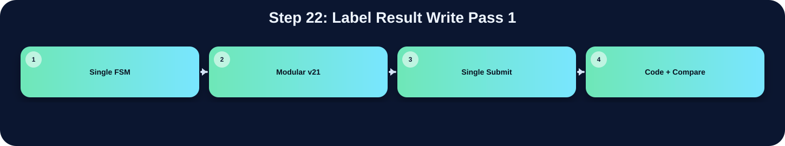

將第一階段 provisional label 寫入記憶體。

此表把本流程在三個版本中的 state/module 與 code 關係整理出來；沒有明確對應者保持空白。
| 版本 | 對應 state / module | 和 code 的關係 |
|---|---|---|
| Single FSM | ||
| Modular v21 | ccl_v21_fast | 把 label 結果寫入 AnsSRAM |
| Single Submit | ccl WRITE_PASS_1 | 把 pass 1 的 label 寫入 AnsSRAM |
在「Label Result Write Pass 1」流程中，並非三個版本都有獨立而明確的程式段落。Single FSM 版沒有獨立顯示此流程，可能被合併在其他 state 中，或不需要此階段。Modular v21 版有明確對應，主要在 ccl_v21_fast 完成，說明為：把 label 結果寫入 AnsSRAM。Single Submit 版有明確對應，主要在 ccl WRITE_PASS_1 完成，說明為：把 pass 1 的 label 寫入 AnsSRAM。這種差異通常來自架構選擇：單一 FSM 會把多個小步驟合併在同一段 state；模組化版本則傾向把功能交給特定子模組；single_submit 則在單檔中保留 module-level 階段。
下方採用下拉式區塊顯示。中文說明放在程式碼上方；原始程式碼本身沒有修改、沒有插入註解。若某份檔案沒有明確對應流程，該程式碼區塊保持空白。
WRITE_PASS_1:begin
if(WRITE_PASS_1_finish) next_state = FLATTEN_TABLE;
else if(WRITE_PASS_1_read) next_state = READ_PASS_1;
else next_state = WRITE_PASS_1;
end